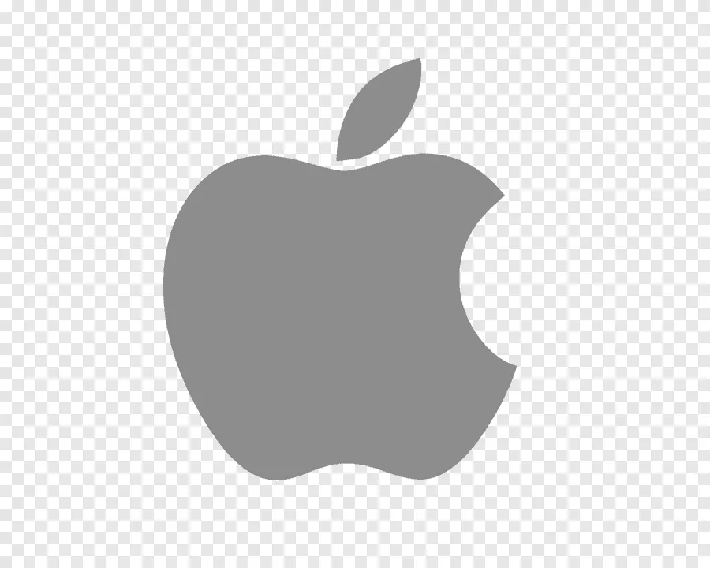
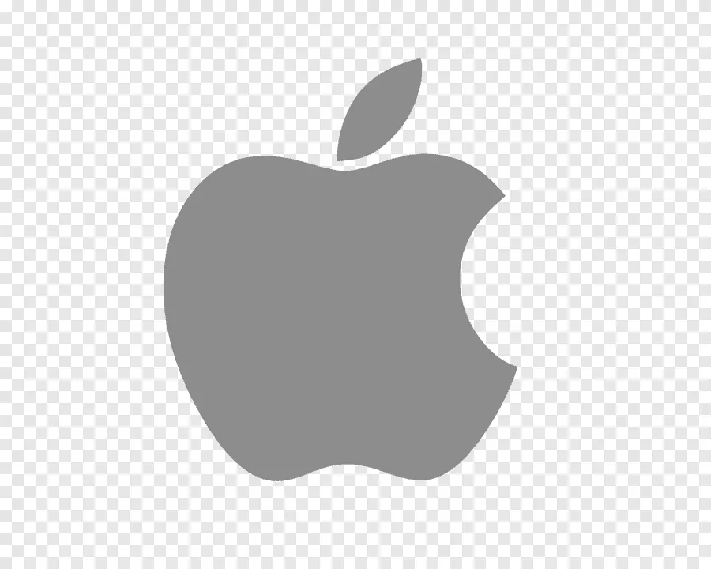

Мобильные ОС
Google Android

Apple IOS
KaiOS
Huawei HarmonyOS
Microsoft Windows 10
Windows — это операционная система, сделанная корпорацией Microsoft (Майкрософт). Операционная система (ОС) — это главная программа, которая запускается при включении компьютера. Она позволяет пользователям компьютера работать с файлами, пользоваться Интернетом и запускать в окошках другие программы, игры, фильмы, музыку. Windows переводится как "окна".
macOS
Linux
Google Android
Apple IOS
KaiOS
Huawei HarmonyOS
Windows Server
Ubuntu server
CentOS
Red Hat Enterprise Linux
Кошка — домашнее животное, одно из наиболее популярных (наряду с собаками) «животных-компаньонов» или домашних животных. Кошки — млекопитающие и плотоядные животные.